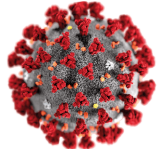

Corona Virus
dashboard
TOTAL AFFECTED PERSONS
Total Deaths
Total Recovered
Currently infected
47,524
Mild condition
41,736
Critical condition
5,788
Cases with
outcome
68,722
COVID-19 world impact
Click on a country
Country, Other
China
Total Cases
80,757
New Cases
22
Total Deaths
3,136
New Deaths
+17
Total Recovered
60,104
Serious/critical
4,794
Daily Deaths
of Novel Coronavirus (2019-nCoV)
Total Deaths
of Novel Coronavirus (2019-nCoV)